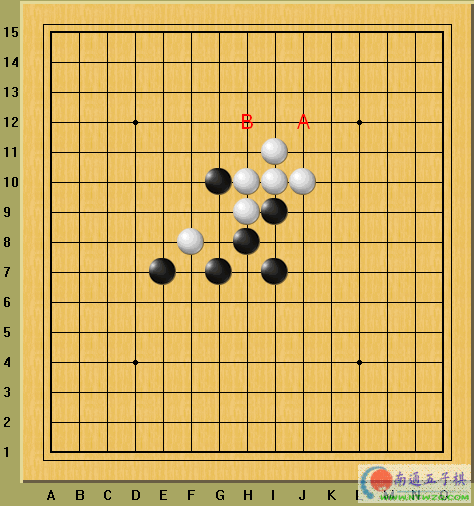
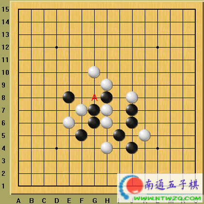
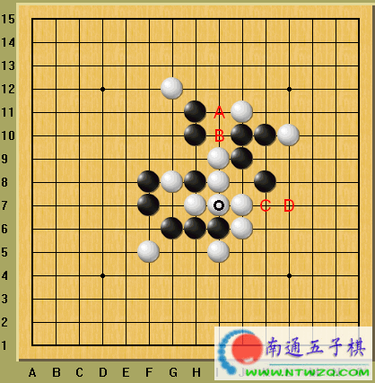
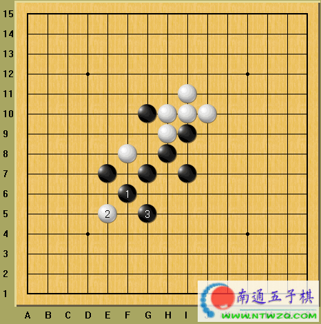
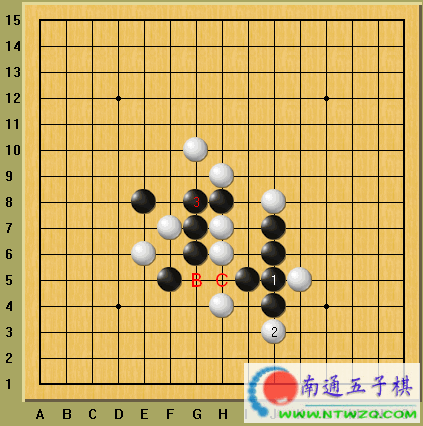
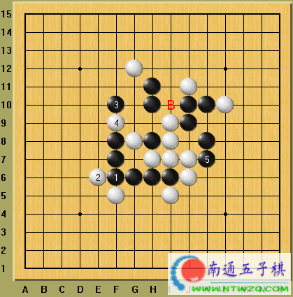

黑棋如何逃避禁手？
#1 黑棋如何逃避禁手？ 作者：有志青年 发表时间：2006-6-3 12:30:26
提示：白方下一手将于Ａ点冲四，迫使黑棋着于Ｇ９点形成“三三”禁手。
如果黑方简单地在Ａ位防守，白方将依次着于Ｂ、Ｊ１１、Ｈ１１而获胜。黑方
如何摆脱这个困境呢？如何解禁又不丢失先手呢？

你可以在线拆棋：
答案稍后提供
#2 黑棋如何逃避禁手？[2] 作者：有志青年 发表时间：2006-6-7 12:57:16

提示：白方有一个斜跳三，意图迫使黑方着于Ａ点形成“三三”禁手，黑方如何解围呢？
在线打谱：
#3 黑棋如何逃避禁手？[3] 作者：有志青年 发表时间：2006-6-7 13:02:41

提示：白方最后一手着于◎(Ｉ７)点，现在，黑方面临这双重危险，其一 是白方将于Ａ点冲四，逼迫黑方Ｂ点的“四四”禁手；其二是白方正在活三， 下一手可于Ｃ点冲四活三叫杀。如果黑方简单地于Ｄ点跳冲四解禁，那么白应 于Ｂ点之后为反冲四，黑仍将被白方于Ｃ点叫杀。是不是该投子认输了？
#4 黑棋如何逃避禁手？〔答案〕 作者：有志青年 发表时间：2006-6-7 13:06:49
第一题：

黑１先冲四，与白２交换后，黑３妙着！有此一手，Ｃ点已不再是黑方的“三三”禁手点了。（不用再解释原因了吧，呵呵）
现在，黑方正在斜活三，先手在握。如果白方继续在Ａ位冲四，只能造成黑方又出现一个斜活三（注意：先后出现的两个活三不是“三三”禁手）。如果白方于Ｈ４或Ｄ８防守，由于黑方的优势兵力全部集中在下边，均可以很快获胜，请大家自行演示。
第二题：

黑１首先于Ｊ５点冲四，然后黑３从容着于地Ｇ８点，不仅不是“三三” 禁手，而且是一个活三，先手。由于黑１的出现，使得黑３以后Ｂ点成为黑方的“四四”禁手，因此纵向的连三不是活三！黑方反用禁手规则来替自己解围，这就是禁手的活用。
当初白棋斜活三之前，若先在Ｃ点冲四，则黑方的禁手将无法解脱。一着之差，局势将完全改观。“五子精华，一子输赢”，千万不要忽视你下出的每一着棋！
第三题：

黑１、３利用绝对先手连续冲四，终于在第１０行横向上形成了“长连”的潜在状态，解除了Ｂ点的“四四”禁手。黑５再防守于Ｋ７点，同时形成跳三。
此后双方的战斗将继续进行下去。但黑方已经成功地排除了各种潜在的危险！
#5 Re:黑棋如何逃避禁手？ 作者：kfbgp 发表时间：2006-10-15 19:50:31
看看答案#6 Re:黑棋如何逃避禁手？ 作者：默默无闻 发表时间：2006-10-15 21:00:54
不会~~~~~~~~~~~~~~~
#7 Re:黑棋如何逃避禁手？ 作者：gerbo 发表时间：2007-5-7 2:08:13
 好东西啊
好东西啊
#8 Re:黑棋如何逃避禁手？ 作者：nara 发表时间：2008-12-1 21:34:19
有图片好象看不见,请有志大哥修复下.#9 Re:黑棋如何逃避禁手？ 作者：飞熊 发表时间：2008-12-2 13:32:55
这个帖子很及时啊哈哈